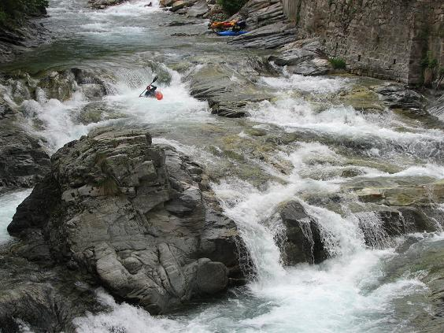

Belgians - Return to Mollia Rapid - Beating
L’indecisione è la chiave della flessibilità
|
|
|
Belgians - Return to Mollia Rapid - Beating |
||
|---|---|---|---|---|
|
L’indecisione è la chiave della flessibilità
|
Belgians
What is the purpose of Belgians? They make good chocolate obviously, but really, after that? Enough about Belgians.
Tom's Top Tips II: When taking sneaky pictures of others reflected in sunglasses, beware that you may be reflected in the sunglasses also. Sneaky Tom takes a picture of unsuspecting Jim.
Having spent a goodly part of the day driving around the Sesia side valleys looking at various other rivers and finding them all too high, too low, too near, too far, and so on, we ran into some Belgians. As mentioned previously, one of the problems with driving around all day is that you tend to get lazy. A more serious problem is when car fever sets in and you're so anxious to do something, anything, that you take river recommendations from passing Belgians. Never pull over to take advice from, and offers to go paddling with, Belgians.
We almost got onto some heinous gorge section, specifically the Torrente de Inferno, of the Sorba, with a 25 m waterfall that needs climbing ropes to portage, unseen, as daylight faded on the advice of random strangers whose paddling skills turned out to be as useful as their advice.
Return to Mollia Rapid
We choose to go back to the same section as the previous day - Sesia down to the campsite, again including the Mollia Rapid, which had quickly become the pepper in our sandwiches.
Tom, upfront and eager, leads off...

A little hesitation before choosing the right-hand slot...
Overhead shot of Tom finishing out the Mollia rapid...
Mick, newly rented replacement paddles a-go-go, cruises down...
Down the ramp and into the white stuff, no problem.
...before emerging under the bridge skirting past the nasty little stopper at the end. Happy days.
Belgian number one watched by Belgian number two. The camper van on the road stopped, having heard on the radio that Irish tourists had gone paddling with Belgians...
Belgian number two, in those green plastic clog things that are so de rigueur in Europe this season, observes the Simon Barry 'warm-up/stretching/boat-rebuilding' routine. Many have wondered what it is that Simon does for twenty minutes in the eddy before running anything of any significance.
Obviously this preparation technique is famed far and wide, with wonder and amazement having reached even to the far shores of distant Belgium. We now believe that these guys are from some Flemish Institute of Time and Motion Studies. Either that or they were a pair of Walloons.
Whatever it is that Simon does in his moment of loneliness, it seems to work. See those grabtails fly...
I think that needs a close-up...
Belgian number two follows Simon down, taking notes...
Jim checks downstream to ensure the line is clear of Belgians.
With none in sight, it seems safe to continue...
At this point, we would like to point out that apart from chocolate, Belgium has contributed greatly to the beauty of the world - did you know, for example, that the guy who invented the saxophone was Belgian?
Jim gets a Beating
Just below Mollia Rapid and at the put-in for the portage, there's a drop that's fine if you do it right.
If you do it wrong because you're dozy having done it correctly the previous day, you can get a beating. Jim potters towards the edge chatting over his shoulder to Simon, who is doing his thing again...
Jim gets turned sideways and fails to exit the hole fully...
...does a little turbulent sidesurfing, before scoring highly in a personal rodeo, and takes the single worst stopper-beating of his career since a certain famous day on the Clare Glens back in the day paddling the club's pink spud when it was the club's red spud. It's an innocuous-looking stopper but it doesn't release easily.
There are no more photos on this page; how ghoulish of you to wonder.